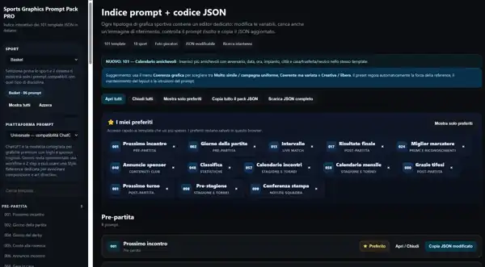
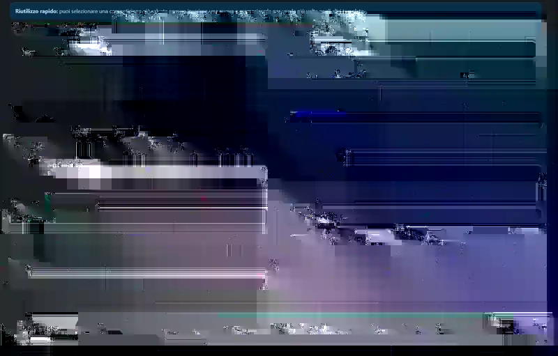
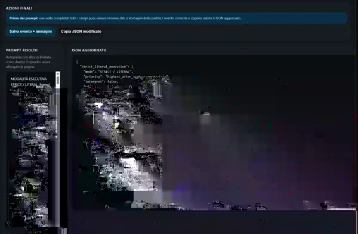
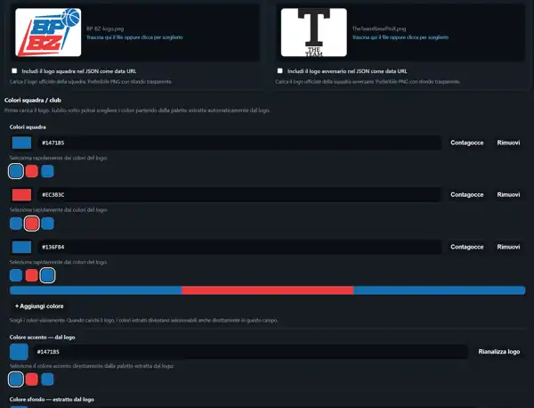

JSON Editor
Parametri e contenuti vengono organizzati in una struttura modificabile e riutilizzabile.
Case study · Sports Graphics Automation
Un tool pensato per organizzare la produzione di grafiche sportive tramite template, dati strutturati e regole visive ripetibili, riducendo setup manuale e incoerenza tra un contenuto e l'altro.
Versione
v13
Template
101
Data model
JSON-driven
Sport
18
Real product screens
Schermate reali del tool: libreria dei template, dati riutilizzabili, generazione del prompt/JSON e gestione visuale di loghi e palette.

01 · Template Library
Filtri per sport e piattaforma, ricerca istantanea, preferiti e categorie rendono il pack navigabile. Da qui è possibile copiare o scaricare il JSON del sistema.

02 · Event & Template Data
Competizione salvata, data, ora, impianto, città, testo principale, stile e formato entrano nello stesso flusso con controlli sui campi obbligatori.

03 · Prompt + JSON Engine
Il sistema risolve le istruzioni, aggiorna la struttura JSON e permette di salvare evento e immagini o copiare immediatamente il JSON modificato.

04 · Branding & Palette
Il caricamento dei loghi alimenta una palette selezionabile con valori HEX, colori accento e controlli dedicati: la coerenza visiva viene gestita dentro il workflow, non a parte.
01 · Il problema
Nella produzione sportiva ricorrente cambiano nomi, numeri, avversari, roster, immagini e testi, mentre la struttura visiva deve rimanere coerente.
Il progetto sposta questa logica da un processo manuale a un sistema strutturato, dove template e dati possono essere riutilizzati e aggiornati.
02 · Product map
Le aree principali del sistema sono supportate dalle schermate reali mostrate sopra.
Parametri e contenuti vengono organizzati in una struttura modificabile e riutilizzabile.
101 configurazioni per coprire diversi formati e casi d'uso sportivi.
Squadre, eventi e dati ricorrenti possono essere memorizzati e richiamati nei template.
Loghi, palette e indicazioni visive entrano direttamente nella specifica operativa.
03 · Repeatability
Per template
Le configurazioni possono essere mantenute per singolo template invece di ricostruire ogni volta il setup.
Portabilità
Esportazione JSON e backup import/export permettono di spostare o ripristinare configurazioni.
Assets
Gli asset vengono associati al flusso e possono contribuire direttamente alle regole del template.
Visual consistency
Stile, palette e istruzioni vengono trattati come dati controllabili invece di dipendere solo da interventi manuali.
04 · Workflow
01
Si parte da una struttura già definita.
02
Evento, squadre, testi e parametri entrano nella specifica JSON.
03
Loghi, stile e palette restano collegati alla configurazione.
04
Prompt e JSON rimangono disponibili per produzioni successive.
Risultato
Il progetto dimostra progettazione di tool verticali, modellazione dati, automazione di workflow ripetitivi e gestione della coerenza visiva attraverso regole strutturate.